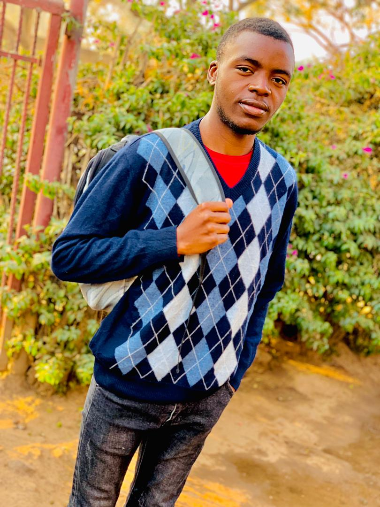

MY_SELF

HELLO!!! I'm
Godwin LUFATAKI
Computer science student
Je suis actuellement etudiant à ESIS (Ecole Supérieure d'Informatique Salama) en première année de license,
j'ai fait mes études secondaires à l'Institut Technique Salama (ITS), et ai obtenu un diplome en electronique.
J'ai eu une enfance plutot pais
SKILLS
-
Connaisances avancées en électronique
-
Maintenances d'équipement et appareils électroniques
-
Langage C (Basiques)
-
Maintenances d'équipement et appareils électroniques
HOBBIES
-
Nouvelles technologies (particulièrement l'internet des objets );
-
Systèmes embarqués;
-
Jeux video;
-
Musique classique (mon instrument préféré étant le violon!!!);
-
Culture nippone;
-
Innover en usant des technologies à notre portée.
MOT D'ORDRE
Jettons-nous dans le vide!!!
SARANI O KOE!!!
MES COORDONNEES